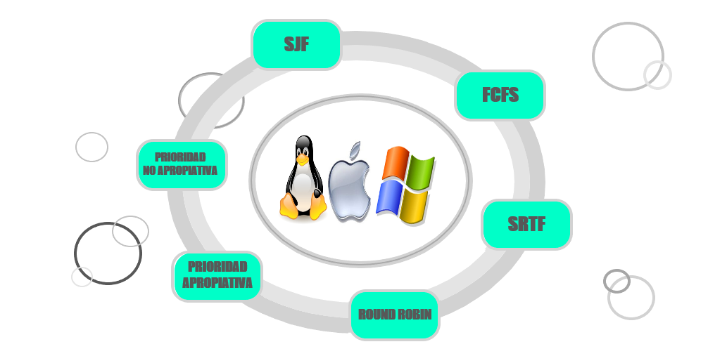

Esteban Robert
Algoritmos de Planificacion

Los sistemas operativos multi tarea y los multi programados, poseen un módulo que se encarga de la planificación de los procesos, la cual no es más que la selección del orden en que cada uno se ejecuta efectivamente, o dicho con más precisión, tiene el control de la CPU. Para tomar esa decisión se usan diferentes algoritmos.Estos algoritmos surgieron debido a la necesidad de organizar de manera eficiente los distintos procesos para que el procesador funcione de manera óptima.
Los Algoritmos de Planificación son aquellos que se encargan de asegurar que un proceso no monopolice al procesador. Un proceso es un programa que está en ejecución. Este proceso puede estar en 3 estados diferentes: “Listo”, “Bloqueado” y “En Ejecución”. Los procesos son almacenados en una lista junto con la información que indica en qué estado está el proceso, el tiempo que ha usado el CPU, etc.
Entonces, frente a estas preguntas se dice que la Planificación de Procesos en Sistemas Operativos son un conjunto de políticas y mecanismos incorporados al sistema operativo, a través de un módulo denominado Planificador, que debe decidir cuál de los procesos en condiciones de ser ejecutado conviene ser despachado primero y qué orden de ejecución debe seguirse. Esto debe realizarse sin perder de vista los principales objetivos de la planificación de procesos como la equidad, la eficacia, el tiempo de respuesta, el rendimiento, o extraer el máximo aprovechamiento del sistema, lo que implica proveer un buen servicio a los procesos existentes en un momento dado.
Esta aplicación nos permite simular la planificación de procesos. Fue desarrollado para la cátedra de Sistemas Operativos, de la carrera Ingeniería en Informática, dictada en la Facultad de Tecnología y Ciencias Aplicadas perteneciente a la Universidad Nacional de Catamarca.